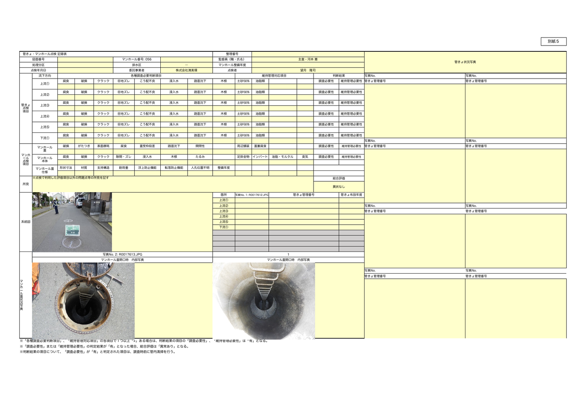

🌱 はじめに
清美環さんへ。先日のお打ち合わせで伺った「手書きの点検記録表に、現場の写真を入れたい」というご要望を受けて、お試し版として用意したものです。
このページは、道具一式の中身・できること・受け取り方・実際の動きを、1ページで分かるようにまとめてあります。気になるところからどうぞ。
seibikan-photo-embed🔖 これは何？ Claude Code（AIに自分用の道具を作らせる仕組み）に、「管きょ点検記録表の写真欄に現場写真を配置する」進め方を覚えさせた"道具一式"です
🎯 想定： Google等の外部サービスは使わず、お使いのパソコンの中だけで完結します
この道具一式は、Claude Code（AIエージェント）が写真埋め込みを進めるための「手順・部品・確認方法」をまとめたものです。パソコン環境や写真の状態によって、最初は調整が必要になることがあります。エラーが出た場合も、画面の内容を見ながら、AIエージェントと一緒に原因確認しながら進めていく前提の叩き台です。
📋 できること
現場で撮ったマンホールごとの写真フォルダを photos_here/ に置くだけで、管きょ点検記録表のエクセルに 写真3枚が自動で正しい欄に配置された状態で出てきます。
埋め込みされる3つの写真欄
| 位置 | 用途 | 写真サイズの目安 |
|---|---|---|
| 上段中央 | 管きょ状況写真 | 約 730×290 px |
| 下段左 | マンホール蓋状況写真 | 約 730×370 px |
| 下段右 | マンホール蓋開口時 内部写真 | 約 660×370 px |
写真は アスペクト比を維持 したまま、各欄にちょうど収まるサイズに自動リサイズされて埋め込まれます。
大事なルール
- お写真は外に出ません — すべてパソコンの中だけで処理します。自動でどこかに送信されることはありません
- マンホール番号 = フォルダ名 —
photos_here/056/のように番号をフォルダ名にするだけで、Excel側の番号欄にも自動で書き込まれます - まずは叩き台 — いきなり完璧な全自動ではなく、「実際の現場記録でどこまで使えそうか」を確かめる初版です
🏗 道具一式の中身
道具一式は1つのフォルダで完結します。中身はWindowsでも扱いやすいようにまとめています：
🍳 やる手順（4ステップ）
photos_here/056/ のように、番号フォルダを入れるoutput_excel/ に出てきた xlsx を Excel で開いて、写真の入り方を確認Step 2：写真の入れ方（イメージ）
ポイント：
- マンホール番号を そのまま フォルダ名にしてください（
056,057...） - 写真は1フォルダにつき最低1枚、推奨3枚以上
- 写真の中身は順不同でOK。ファイル名昇順で先頭3枚が自動で写真欄に配置されます
Step 3：Claude Code への話しかけ方
全マンホール一気に処理する場合：
写真をExcelに入れて
特定のマンホールだけ処理する場合：
056番のマンホール処理して
→ Claude Code がこのスキルを自動で使って、output_excel/ にエクセルを出してくれます。
Step 4：出てきたファイルを開く
このエクセルを そのまま Excel で開くだけ でOK。3つの写真欄に、現場写真が枠ぴったりに配置されています。
📝 サンプル出力（マンホール056・実物）
同梱のサンプル写真（マンホール 056 の現場写真3枚）を使って、実際にこの道具で組み上げた出力例です。下の画像が、Excel で開いたときの見た目そのものです。

📂 受け取り方
今回はWindowsでのご利用を想定しています。下のZIPをダウンロードして、好きな場所に展開すれば使える形です。
✅ Windowsで設置する
止まった場合は、Claude Codeにエラー内容を見せて原因確認しながら進めます
⬇️ seibikan-photo-embed.zip をダウンロード（約 3.8MB）
- ダウンロードしたZIPを 右クリック → すべて展開 します（
skill_inspection_embedフォルダができます） - 展開したフォルダを、デスクトップなど好きな場所に置きます
- 初回だけ、環境ドクターで準備を確認します：
py -3 setup_check.py
- 「はじめにお読みください.md」を開いて、写真の入れ方をご確認ください
- 写真を
photos_here/{マンホール番号}/に入れたら、Claude Code を開いて：写真をExcelに入れて
※ py -3 が動かない場合は、Claude Codeが python で動くか確認して進めます。
⚡ Claude Code にお願いする文章のテンプレ
下の文章をコピーして、Claude Code に貼り付ければ、Windows向けに解凍～設置～動作確認まで進めてくれます。
Windowsで、ダウンロードした seibikan-photo-embed.zip を解凍して、 Claude Codeのスキルとして使えるようにしてください。 手順： 1. ダウンロードフォルダにある seibikan-photo-embed.zip を展開 2. 展開した skill_inspection_embed フォルダをデスクトップに置く 3. py -3 setup_check.py を実行して環境を確認 4. sample/056/ を photos_here/ にコピーして、py -3 embed_photos.py 056 でお試し実行 5. output_excel/ に出てきたエクセルを開いて確認 6. 結果をやさしく教えて
🔧 詰まったとき
- Windows + Shift + S ⭐ ＝ 範囲選択スクショ（エラーの部分を四角で囲んで撮るのに便利）。撮ったあと、そのまま Claude Code のチャット欄に Ctrl + V で貼り付けできます
- PrtScn（Print Screen キー） ＝ 画面全体をコピー（ペイントなどに貼り付けて保存）
よくあるメッセージと対処
| こんなメッセージ | こうしてみる |
|---|---|
python3: command not found / 'py' は内部コマンドではありません |
Python が入っていません。Microsoft Store で「Python 3.12」を検索してインストール。インストール時に 「Add Python to PATH」を必ずチェック |
ModuleNotFoundError: No module named 'openpyxl' |
必要な部品が足りません。py -3 -m pip install openpyxl Pillow をClaude Codeに貼り付けて実行してもらってください |
テンプレが見つかりません |
ZIPの展開に失敗しているかも。もう一度ZIPを展開し直してください |
photos_here/056/ が見つかりません |
photos_here/ の中に、番号フォルダ（例：056）が入っているかご確認ください |
| 写真位置がズレている | 原本フォーマットが変わっている可能性があります。エクセルの構造を見せていただければ、調整します |
⚠️ 限界と注意
このスキルがやらないこと
- 判定欄（×／○）の自動入力は しません
- 写真の中身を見ての自動仕分け（蓋／蓋開口時／管内）は しません
- 手書き原本のOCR読み取りは このスキルとは別工程 です
- 写真の選択順は「ファイル名昇順で先頭3枚」固定です
→ 判定や写真の選び直しは、Excel上で清美環さんに行っていただく前提です。AIが「ここまでやって、ここからは人間が」という線引きを明確にしてあります。
なぜこの設計にしているか
「自動でできているように見えて、実は判定を間違えていた」が、現場では一番怖いと考えています。AIが「判定までやった顔」をするより、写真の埋め込みだけ確実に済ませて、判断は現場の方が責任を持って行える状態に整える設計にしました。
「ここまでなら任せてもいい」「ここは自分でやりたい」のラインを、ぜひ教えてください。育てていきます🌱